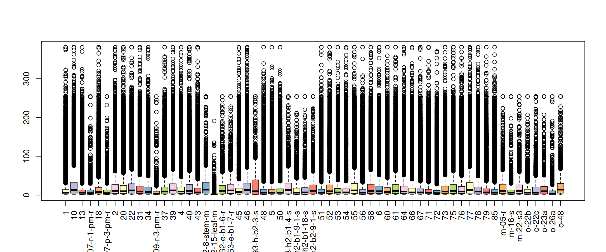
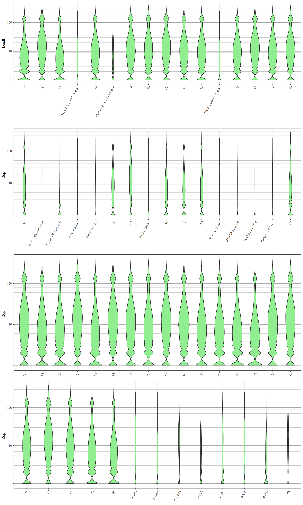
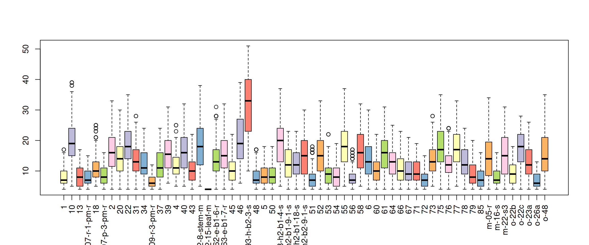

vcfR documentation
byBrian J. Knaus and Niklaus J. Grünwald
Quality filtering
Once a sequencing run has been completed the sequence reads are typically aligned to a reference genome and variants are called. These variants are typically stored in a VCF format file. THe R package vcfR was designed to import and export this data into the R environment. Once in the R environment, vcfR provides tools to manipulate the data to help you understand its content. Common issues in variant data may be that certain samples may be of low quality or certain vriants may be of questionable quality. Here we’ll provide examples of how vcfR can help accomplish these tasks.
Data import
Our first step will be to import the VCF data into R. The result will be that our VCF data will be stored in a ‘vcfR’ object. Once we have read it in we can validate our data is what we expect by using the show method. The show method is available for many types of objects and is implemented when the object’s name is entered at the console with no other information. THe show method typically provides summary information about the object and what it contains.
library(vcfR)
vcf <- read.vcfR('TASSEL_GBS0077.vcf.gz')
class(vcf)vcf## ***** Object of Class vcfR *****
## 61 samples
## 7171 CHROMs
## 69,296 variants
## Object size: 46.5 Mb
## 37.62 percent missing data
## ***** ***** *****The results from the show method informs us that our vcfR object contains 61 samples and 69,296 variants. This is what we expected so we can be confident that our data was imported correctly. The output also informs us that there is just over 37% missing data in our file. In our experience this is typical for GBS data sets.
Extract depth (DP)
The vcfR function extract.gt() is used to extract matrices of data from teh GT portion of VCF data. the funtion extract.gt() provides a link between VCF data and R. Much of R is designed to operate on matrices of data and once extract.gt() provides this matrix the universe of R becomes available. Note that we use the ‘as.numeric=TRUE’ option here. We should only use this option when we are certain that we have numeric data. If you use it on non-numeric data R will do its best to do something, which is not likely to be what you expect. We can use the queryMETA() function remind us what this element is.
queryMETA(vcf, element = 'FORMAT.+DP')## [[1]]
## [1] "FORMAT=ID=DP"
## [2] "Number=1"
## [3] "Type=Integer"
## [4] "Description=Read Depth (only filtered reads used for calling)"vcf@gt[1:4,1:4]## FORMAT 1 10
## [1,] "GT:AD:DP:GQ:PL" "0/0:5,0:5:96:0,15,180" "1/1:0,10:10:99:255,30,0"
## [2,] "GT:AD:DP:GQ:PL" "1/1:0,1:1:66:36,3,0" "0/0:4,0:4:94:0,12,144"
## [3,] "GT:AD:DP:GQ:PL" NA NA
## [4,] "GT:AD:DP:GQ:PL" "1/1:0,5:5:96:180,15,0" "0/0:8,0:8:99:0,24,255"
## 13
## [1,] "0/0:9,0:9:99:0,27,255"
## [2,] "0/0:1,0:1:66:0,3,36"
## [3,] "0/0:3,0:3:88:0,9,108"
## [4,] NAdp <- extract.gt(vcf, element = "DP", as.numeric=TRUE)
dp[1:4,1:3]## 1 10 13
## S1_4509 5 10 9
## S1_4657 1 4 1
## S1_5193 NA NA 3
## S1_5647 5 8 NAMissing data
sum(is.na(dp[,1]))## [1] 11725# apply(dp, MARGIN = 2, function(x){sum(is.na(x))})myMiss <- apply(dp, MARGIN = 2, function(x){sum(is.na(x))})
myMiss <- myMiss/nrow(vcf)
library(RColorBrewer)
palette(brewer.pal(n=12, name = 'Set3'))
par(mar = c(12,4,4,2))
barplot(myMiss, las = 2, col = 1:12)
title(ylab = "Missingness")par(mar = c(5,4,4,2))Sequence depth
boxplot(dp, col=2:8, las=3)
library(reshape2)
library(ggplot2)
library(cowplot)
# Melt our matrix into a long form data.frame.
dpf <- melt(dp, varnames=c('Index', 'Sample'), value.name = 'Depth', na.rm=TRUE)
dpf <- dpf[ dpf$Depth > 0,]
# Create a row designator.
# You may want to adjust this
#samps_per_row <- 20
samps_per_row <- 16
myRows <- ceiling(length(levels(dpf$Sample))/samps_per_row)
myList <- vector(mode = "list", length = myRows)
for(i in 1:myRows){
myIndex <- c(i*samps_per_row - samps_per_row + 1):c(i*samps_per_row)
myIndex <- myIndex[myIndex <= length(levels(dpf$Sample))]
myLevels <- levels(dpf$Sample)[myIndex]
myRegex <- paste(myLevels, collapse = "$|^")
myRegex <- paste("^", myRegex, "$", sep = "")
myList[[i]] <- dpf[grep(myRegex, dpf$Sample),]
myList[[i]]$Sample <- factor(myList[[i]]$Sample)
}
# Create the plot.
myPlots <- vector(mode = "list", length = myRows)
for(i in 1:myRows){
myPlots[[i]] <- ggplot(myList[[i]], aes(x=Sample, y=Depth)) +
geom_violin(fill="#90EE90", adjust=1.0, scale = "count", trim=TRUE)
myPlots[[i]] <- myPlots[[i]] + theme_bw()
myPlots[[i]] <- myPlots[[i]] + theme(axis.title.x = element_blank(),
axis.text.x = element_text(angle = 60, hjust = 1))
myPlots[[i]] <- myPlots[[i]] + scale_y_continuous(trans=scales::log2_trans(),
breaks=c(1, 10, 100, 800),
minor_breaks=c(1:10, 2:10*10, 2:8*100))
myPlots[[i]] <- myPlots[[i]] + theme( panel.grid.major.y=element_line(color = "#A9A9A9", size=0.6) )
myPlots[[i]] <- myPlots[[i]] + theme( panel.grid.minor.y=element_line(color = "#C0C0C0", size=0.2) )
}# Plot the plot.
plot_grid(plotlist = myPlots, nrow = myRows)
Once we have extracted the quantile information we can use apply and quantile to build intervals for what we may consider acceptable coverage.
quants <- apply(dp, MARGIN=2, quantile, probs=c(0.1, 0.8), na.rm=TRUE)
#quants <- apply(dp, MARGIN=2, quantile, probs=c(0.34, 0.68), na.rm=TRUE)
quants[,1:17]## 1 10 13 1725-d-8-21-07-r-1-pm-r 18 1858-d-10-15-07-p-3-pm-r 2 20 22
## 10% 1 2 1 1 1 1 2 2 2
## 80% 18 42 17 15 25 16 34 31 37
## 31 34 3450-d-4-06-09-r-3-pm-r 37 39 4 40 43
## 10% 2 1 1 2 2 2 2 1
## 80% 29 26 12 27 36 27 33 23We can now use these thresholds to censor data outside this threshold.
dp2 <- sweep(dp, MARGIN=2, FUN = "-", quants[1,])
dp[dp2 < 0] <- NA
dp2 <- sweep(dp, MARGIN=2, FUN = "-", quants[2,])
dp[dp2 > 0] <- NA
dp[dp < 4] <- NAUpdate the vcfR object with the censored data.
vcf@gt[,-1][ is.na(dp) == TRUE ] <- NAWe’ll want to see how this has affected the missingness of our vcfR object.
vcf## ***** Object of Class vcfR *****
## 61 samples
## 7171 CHROMs
## 69,296 variants
## Object size: 45.2 Mb
## 66.63 percent missing data
## ***** ***** *****We’ll want to mitigate variants with a high degree of missingness.
dp <- extract.gt(vcf, element = "DP", as.numeric=TRUE)
miss <- apply(dp, MARGIN=1, function(x){sum(is.na(x))})
miss <- miss/ncol(dp)Plot a histogram.
hist(miss, col=8, breaks=seq(0,1,by=0.02))
Omit variants with a high degree of missingness.
#vcf <- vcf[miss < 0.05,]
vcf <- vcf[miss < 0.1,]
vcf## ***** Object of Class vcfR *****
## 61 samples
## 102 CHROMs
## 295 variants
## Object size: 0.2 Mb
## 7.719 percent missing data
## ***** ***** *****dp <- extract.gt(vcf, element = "DP", as.numeric=TRUE)
heatmap.bp(dp, rlabels = FALSE)#heatmap.bp(dp[1:1000,], rlabels = FALSE)boxplot(dp, col=2:8, las=3)
Output to file
write.vcf(tas, 'TASSEL_GBS0077_dp_filtered.vcf.gz')Copyright © 2017 Brian J. Knaus. All rights reserved.
USDA Agricultural Research Service, Horticultural Crops Research Lab.